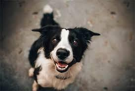
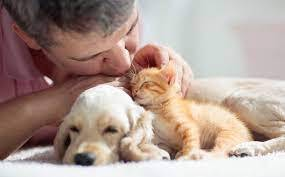
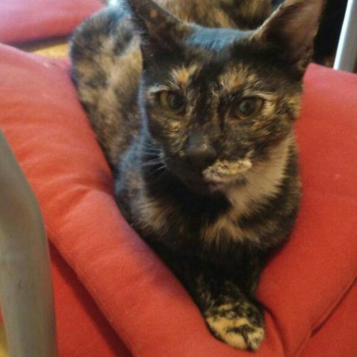

Sobre nosotros
- En Fundacion Patitas, creemos en el poder del amor y el cuidado para transformar la vida de los animales necesitados. Somos un equipo con un objetivo común: crear un mundo donde cada animal tenga la oportunidad de experimentar el amor incondicional y el respeto que merece.
Nuestra Mision
- Nuestra misión es simple pero poderosa: promover la adopción responsable y el bienestar de los animales. Creemos que cada vida es valiosa y que todos los animales merecen un hogar amoroso y seguro. Trabajamos incansablemente para lograr un mundo en el que ningún animal tenga que sufrir el abandono o el maltrato.
Nuestro compromiso
- En el corazón de todo lo que hacemos está el amor y el compromiso con el cuidado. Amamos a los animales y creemos que todos los seres vivos merecen ser tratados con compasión y empatía. Nos esforzamos por crear un puente entre los animales necesitados y las familias amorosas que desean darles un hogar para siempre. Además, nos preocupamos profundamente por su bienestar y estamos comprometidos a asegurarnos de que reciban la atención y el cariño que merecen.
- Creemos que el cambio es posible cuando nos unimos como comunidad. Te invitamos a ser parte de nuestra misión. Ya sea adoptando un nuevo compañero peludo, donando para apoyar nuestra causa o compartiendo nuestra historia, cada pequeño gesto nos acerca un paso más a un mundo en el que todos los animales sean amados y cuidados. Gracias por visitar nuestro sitio web y por considerar unirte a nosotros en esta importante causa. Juntos, podemos marcar la diferencia en las vidas de los animales necesitados.
Unete a nuestra causa
¡Gracias por tu apoyo y por ser un defensor del amor y el cuidado de los animales!


